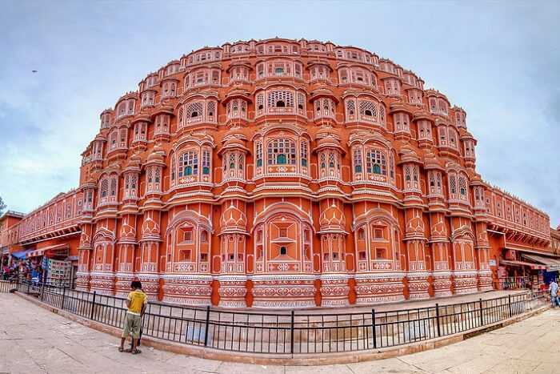
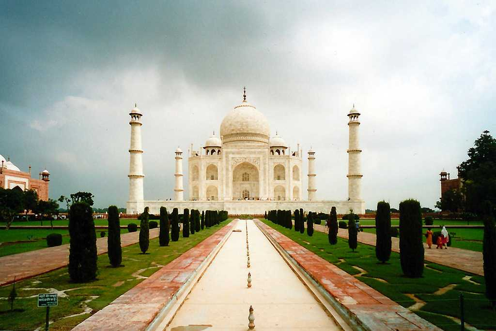
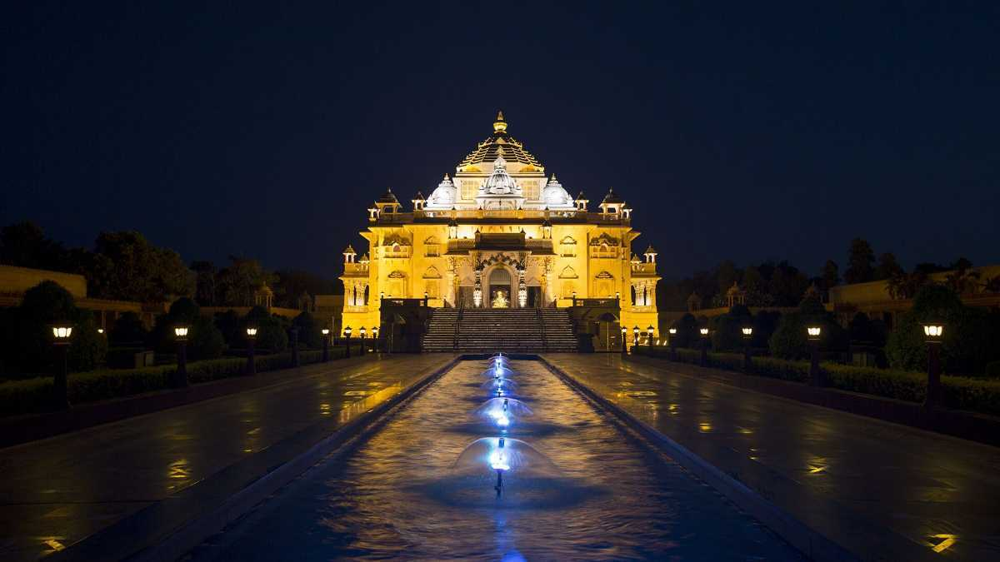

Home of the glorious Golden Temple, the iconic city of Amritsar, portrays the heroic character of Punjab. The second-largest city of the Indian state of Punjab, Amritsar is colloquially known as Ambarsar. Apart from the Golden Temple, Amritsar is known for its lip-smacking street food.
2.GOA
Lying on the western coast, Goa is India's smallest state and unlike any other, known for its endless beaches, stellar nightlife, eclectic seafood, world-heritage listed architecture. Spread across just 3,702 km, Goa lies in the Konkan region.
3.RISHIKESH
Located in the foothills of the Himalayas along the convergence of Ganga and Chandrabhaga River, Rishikesh is a small town in the Dehradun district, located close to Haridwar in Uttarakhand. Rishikesh (also called as Hrishikesh) is known for its adventure activities, ancient temples
4.JAIPUR

Also called the Pink City, Jaipur is the capital of the royal state of Rajasthan. Along with Delhi and Agra, Jaipur forms the Golden Triangle and hails as one of the most famous tourist circuits in the country
5.AGRA

Located on the banks of River Yamuna in Uttar Pradesh, Agra is a popular tourist destination as it is home to one of the 7 wonders of the world, the Taj Mahal.
6.VAISHNO DEVI
Vaishno Devi is a temple town that's home to the famous Vaishno Devi Mandir. Located in Trikuta hills, 13 kms from Katra (in the union territory of Jammu and Kashmir); this renowned shrine allures millions of devotees from all over the world.
7.DELHI
he capital of India, Delhi is a cosmopolitan city with a historic old Delhi and the modern New Delhi. From historical monuments to crowded shopping malls, from an extensive network of the modern metro system to Delhi University campus
8.UDAIPUR
Udaipur, also known as the City of Lakes, is one of the most visited tourist places in Rajasthan. Located around stunning water lakes and enveloped by the Aravalli Hills in all directions, Udaipur is known for its azure lakes, magnificent palaces, vibrant culture and delectable food.
9.AHMEDABAD

A rapidly growing metropolis, an industrial hub, an educational hotspot, and a city with a magnificent past – Ahmedabad is one of the most important cities in Gujarat. Located on the banks of the Sabarmati River, Ahmedabad is the former capital of Gujarat
10.MUMBAI
Mumbai, the capital city of the Indian state of Maharashtra, is a spectacular paradox of chaos and hope, glamour and squalor, modernity and tradition. Famously known as the City of Dreams, Mumbai – formerly known as Bombay - Mumbai is a beautifully blended melting pot of cultures and lifestyles.